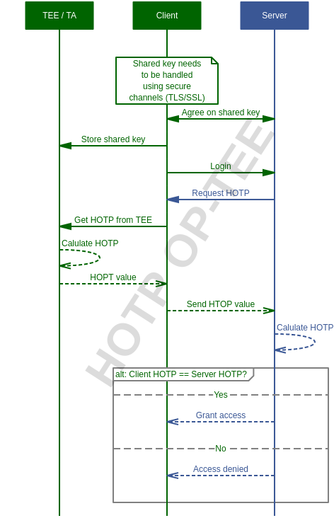

optee_examples
This document describes the sample applications that are included in the OP-TEE, that aim to showcase specific functionality and use cases.
For sake of simplicity, all OP-TEE example test application are prefixed with
optee_example_. All of them works as standalone host and Trusted Application
and can be found in separate directories.
git location
License
The software is provided under the BSD 2-Clause license.
Build instructions
You can build the code in this git only or build it as part of the entire system, i.e. as a part of a full OP-TEE developer setup. For the latter, please refer to instructions at the build page. For standalone builds we currently support building with both CMake as well as with regular GNU Makefiles. However, since the both the host and the Trusted Applications have dependencies to files in optee_client (libteec.so and headers) as well as optee_os (TA-devkit), one must first build those and then refer to various files. Below we will show to to build the hello_world example for Armv7-A using regular GNU Make.
Configure the toolchain
First step is to download and configure a toolchain, see the Toolchains page for instructions.
Build the dependencies
Then you must build optee_os as well as optee_client first. Build instructions for them can be found on their respective pages.
Clone optee_examples
$ git clone https://github.com/linaro-swg/optee_examples.git
Build using GNU Make
Host application
$ cd optee_examples/hello_world/host
$ make \
CROSS_COMPILE=arm-linux-gnueabihf- \
TEEC_EXPORT=<optee_client>/out/export/usr \
--no-builtin-variables
With this you end up with a binary optee_example_hello_world in the host
folder where you did the build.
Trusted Application
$ cd optee_examples/hello_world/ta
$ make \
CROSS_COMPILE=arm-linux-gnueabihf- \
PLATFORM=vexpress-qemu_virt \
TA_DEV_KIT_DIR=<optee_os>/out/arm/export-ta_arm32
With this you end up with a files named uuid.{ta,elf,dmp,map} etc in the ta
folder where you did the build.
Note
For a 64-bit builds (or any other toolchain) you will need to change
CROSS_COMPILE (and also use a PLATFORM corresponding to an Armv8-A
configuration).
Coding standards
See Coding standards.
Example applications
acipher
Application name
UUID
optee_example_acipher
a734eed9-d6a1-4244-aa50-7c99719e7b7b
Generates an RSA key pair of specified size and encrypts a supplied string with it using the GlobalPlatform TEE Internal Core API.
aes
Application name
UUID
optee_example_aes
5dbac793-f574-4871-8ad3-04331ec17f24
Runs an AES encryption and decryption from a TA using the GlobalPlatform TEE Internal Core API. Non secure test application provides the key, initial vector and ciphered data.
hello_world
Application name
UUID
optee_example_hello_world
8aaaf200-2450-11e4-abe2-0002a5d5c51b
This is a very simple Trusted Application to answer a hello command and incrementing an integer value.
hotp
Application name
UUID
optee_example_hotp
484d4143-2d53-4841-3120-4a6f636b6542
HMAC based One Time Password in OP-TEE
HMAC based One Time Passwords or shortly just ‘HOTP’ has been around for many years and was initially defined in RFC4226 back in 2005. Since then it has been a popular choice for doing two factor authentication. With the implementation here we are showing how one could leverage OP-TEE for generating such HMAC based One Time Passwords in a secure manner.
Client (OP-TEE) / Server solution
The most common way of using HOTP is in a client/server setup, where the client needs to authenticate itself to be able to get access to some resources on the server. In those cases the server will ask for an One Time Password, the client will generate that and send it over to the server and if the server is OK with the password it will grant access to the client.
Technically how it is working is that the server and the client needs to agree
on shared key (’K’) and also start from the same counter (’C’). How that
is done in practice is another topic, but RFC4226 has some discussion about it.
You should at least have a secure channel between the client and the server when
sharing the key, but even better would be if you could establish a secure
channel all the way down to the TEE (currently we have TCP/UDP support in
OP-TEE, but not TLS).
When both the server and the client knows about and use the same key and counter they can start doing client authentication using HOTP. In short what happens is that both the client and the server computes the same HOTP and the server compares the result of both computations (which should be the same to grant access). How that could work can be seen in the sequence diagram below.
In the current implementation we have OP-TEE acting as a client and the server is a remote service running somewhere else. There is no server implemented, but that should be pretty easy to add in a real scenario. The important thing here is to be able to register the shared key in the TEE and to get HOTP values from the TEE on request.
Since the current implementation works as a client we do not need to think about
implementing the look-ahead synchronization window (’s’) nor do we have to
think about adding throttling (which prevents/slows down brute force attacks).
Sequence diagram - Client / Server

Client / Server (OP-TEE)?
Even though the current implementation works as a HOTP client, there is nothing saying that the implementation cannot be updated to also work as the validating server. One could for example have a simple device (a [security token] only generating one time passwords) and use the TEE as a validating service to open up other secure services.
random
Application name
UUID
optee_example_random
b6c53aba-9669-4668-a7f2-205629d00f86
Generates a random UUID using capabilities of TEE API
(TEE_GenerateRandom()).
secure_storage
Application name
UUID
optee_example_secure_storage
f4e750bb-1437-4fbf-8785-8d3580c34994
A Trusted Application to read/write raw data into the OP-TEE secure storage using the GlobalPlatform TEE Internal Core API.
Further reading
Some additional information about how to write and compile Trusted Applications can be found at the Trusted Applications page.